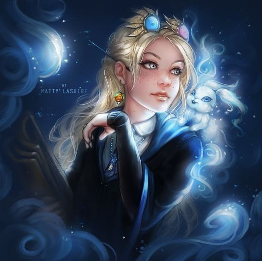

Полумна Лавгуд
Факультет: Когтевран
Патронус: Заяц
Родилась: 13 февраля 1981, Великобритания
Чистота крови: Чистокровная или полукровка
Палочка: Неизвестно
Полумна Лавгуд (
Luna Lovegood
) – студентка Хогвартса, училась на факультете Когтевран на курс младше Гарри Поттера. Отец Полумны, Ксенофилиус — издатель журнала «Придира».